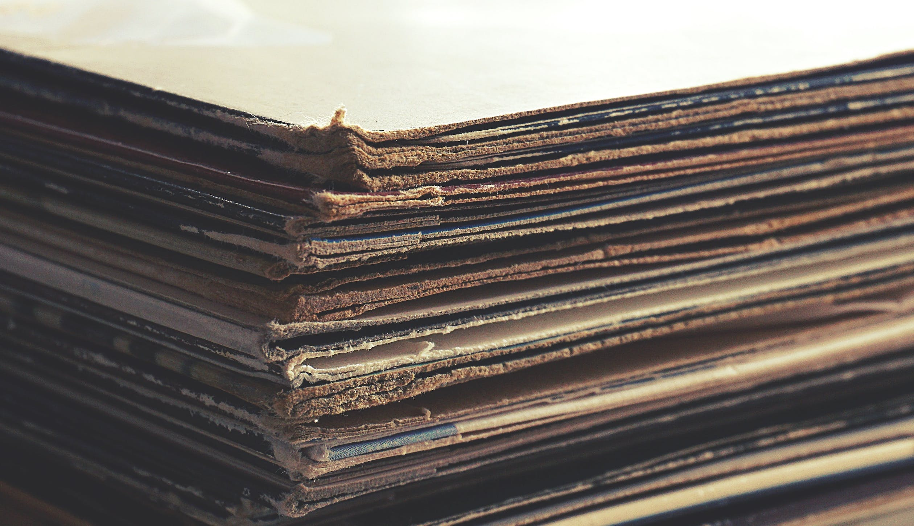

Paper/cardboard

Most papers and cardboards are recyclable. You can recycle newspapers, pizza boxes,
magazines, mail, and much more. Cardboard lined with plastic or wax cannot be recycled.
Cardboard containers are recyclable, just make to break them down and flatten them
before placing them in the bin.
Tissue papers and napkins cannot be recycled.
If you’re recycling takeout containers, make sure you wash them cleanly.
Shredded paper depends on your local recycling program if you can recycle shredded paper.
Paperback books can be recycled. For hardcover, take out the cover before recycling.
Try to donate the book if it is in good condition.
Gift wrap is not recyclable when it has a shiny coating or is laminated.
Try to reuse it.